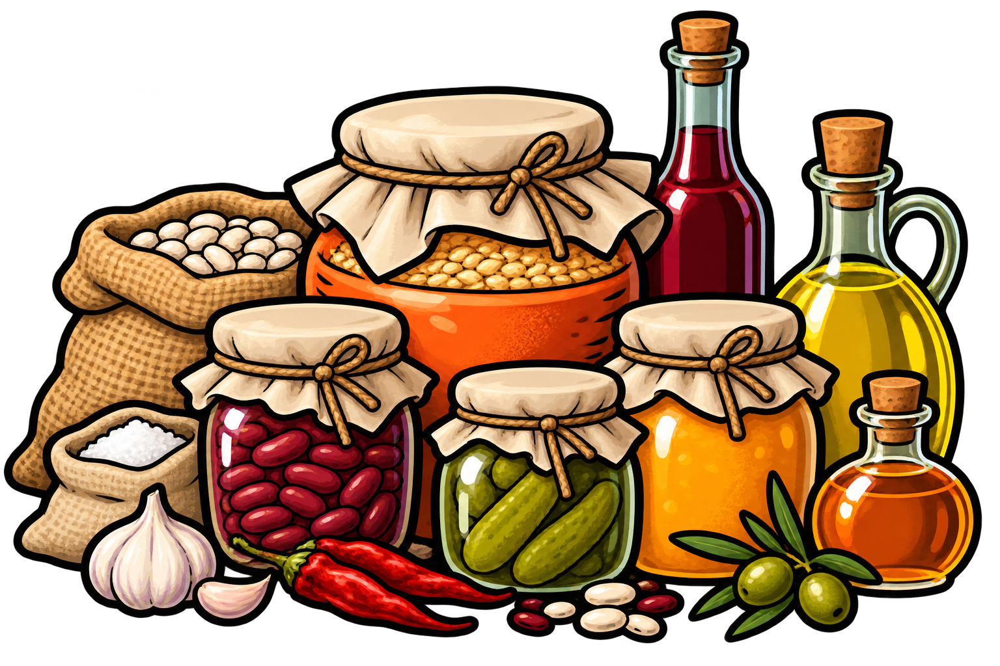

<h2 class="book-page-title" data-book-bind="technology.reserve.label"></h2>
<p>

Conservation lets the village store more food for difficult seasons.
</p>
<p>

Allows construction of a <span data-book-bind="building.granary.label"></span>, which stores up to <span data-book-bind="building.granary.resourceStorageCapacities.food"></span> food. It costs:
</p>
<p>

<span data-book-bind="building.granary.buildCost.lumber"></span>

<span data-book-bind="building.granary.buildCost.stone"></span>
</p>
